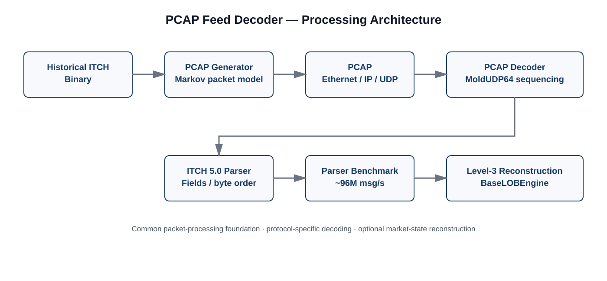

~96.0M
ITCH messages / s
Complete-feed decoding
Research infrastructure
Packet-level decoding and Level-3 reconstruction infrastructure for NASDAQ TotalView-ITCH 5.0.
PCAP Feed Decoder is a market-data processing system for working from captured network traffic to decoded exchange messages and reconstructed Level-3 order-book state.
The current implementation targets NASDAQ TotalView-ITCH 5.0 and covers Ethernet, IPv4, UDP, MoldUDP64 session and sequence handling, ITCH message decoding, packet-level benchmarking, and Level-3 reconstruction.
The decoder can be used directly with an existing ITCH PCAP. An included pcap_generator is provided for cases where only the publicly available historical ITCH binary data is available.
The project is maintained as part of SMMG Research work on market microstructure, market-data infrastructure, and deterministic simulation.
Historical NASDAQ TotalView-ITCH data is commonly distributed as length-prefixed ITCH binary streams, while packet-oriented applications consume the messages inside network packets. The decoder provides the missing packet-level processing path between those two representations.
This makes the same implementation useful for two related tasks: benchmarking packet and message decoding independently, and reconstructing Level-3 order books from the decoded exchange feed.

The processing path is deliberately layered. A packet is first treated as a network object, then reduced through its transport and session framing until the contained ITCH records are available to the exchange-message decoder. The decoded messages can then terminate at the parser benchmark or continue into one of the Level-3 reconstruction paths.
The decoder also contains bounded out-of-order handling. Packets ahead of the expected sequence are temporarily retained and processed when the missing sequence becomes available. Packets that arrive too late, or cannot be retained within the configured buffering window, are counted as out-of-order drops.
Measured on a 15M-packet workload
190,907,472 ITCH messages · ~7 GB PCAP · all active symbols
Latency is measured once per packet, from the beginning of packet processing through completion of that packet. The reported P50/P95/P99 values therefore describe full packet-processing latency, not per-ITCH-message latency.
The parser benchmark decodes the complete feed without invoking Level-3 book updates. This isolates packet handling and ITCH message decoding from the substantially more expensive order-book update path.
| Packets | 15,000,000 |
|---|---|
| Capture size | ~7 GB |
| ITCH messages | 190,907,472 |
| Packet throughput | ~7.54M packets/s |
| ITCH throughput | ~96.0M messages/s |
| P50 / P95 / P99 | 40 ns / 291 ns / 451 ns |
Repeated runs on the same capture produced approximately 94–96 million ITCH messages/s.
A compile-time stock-locate filter isolates one instrument after the stock locate has been decoded while the complete PCAP continues to be traversed. For this benchmark capture, stock locate 398 corresponds to AMZN.
| Packets traversed | 15,000,000 |
|---|---|
| Selected ITCH messages | 254,926 |
| Selected-message throughput | ~215,785 messages/s |
| Packet throughput | ~12.70M packets/s |
| P50 / P95 / P99 | 20 ns / 100 ns / 250 ns |
The same stock filter can be combined with Level-3 reconstruction. Only the selected instrument's decoded messages are passed into the reconstruction path, while the packet stream itself is still traversed in full.
| Packets traversed | 15,000,000 |
|---|---|
| Selected ITCH messages | 254,926 |
| Selected-message throughput | ~187,146 messages/s |
| Packet throughput | ~11.01M packets/s |
| P50 / P95 / P99 | 20 ns / 91 ns / 652 ns |
The full reconstruction workload maintains Level-3 order books across 5,000+ active symbols while consuming the complete feed. It is a substantially heavier workload because order-level state is maintained for thousands of books.
| Packets | 15,000,000 |
|---|---|
| ITCH messages | 190,907,472 |
| Packet throughput | ~438,947 packets/s |
| ITCH throughput | ~5.59M messages/s |
| P50 / P95 / P99 | 592 ns / 9.06 µs / 11.25 µs |
The decoder provides two Level-3 reconstruction paths over the same decoded ITCH feed and the same underlying BaseLOBEngine.
Decoded ITCH messages are applied directly through the engine's itch_* interfaces. This keeps the parser-to-book path direct.
Decoded messages are converted into the internal Event representation and replayed through reconstruct_market_state(). This path can maintain LobState fields for derived market-state statistics.
MEASURE_PARSER_LATENCY still performs packet processing, ITCH message extraction, field decoding, and byte-order conversion, but skips Level-3 book updates. MEASURE_RECON_LATENCY measures the corresponding decoding and reconstruction path with book updates enabled.
Public historical NASDAQ TotalView-ITCH data is distributed as length-prefixed ITCH binary messages rather than original network captures. The generator reconstructs the missing network framing so those real historical messages can be processed by the packet decoder.
The generated PCAP contains Ethernet, IPv4, UDP, MoldUDP64, and the original length-prefixed NASDAQ ITCH messages. The market-data records come directly from the public historical source; the packet boundaries and network headers are constructed by the generator.
The generated PCAP is synthetic at the packet-framing level, not at the market-data level.
This makes the generator a reproducible input-generation utility rather than a requirement of the decoder. If an actual NASDAQ ITCH PCAP is already available, it can be passed directly to pcap_decoder.
The initial generator packed messages until the 1500-byte IP MTU was reached. That produced valid packets but made the distribution heavily concentrated near the maximum size. The current generator instead varies packet-size boundaries with a three-state Markov process, introducing both size variation and temporal clustering.
| State | Packet boundary | Approx. records |
|---|---|---|
| Quiet | 114 or 166 bytes | 1–2 messages |
| Mid | 218–582 bytes | 3–10 messages |
| Burst | 1514 bytes | Up to MTU |
The target long-run state distribution is 60% Quiet / 20% Mid / 20% Burst.
| From / To | Quiet | Mid | Burst |
|---|---|---|---|
| Quiet | 0.80 | 0.18 | 0.02 |
| Mid | 0.56 | 0.28 | 0.16 |
| Burst | 0.04 | 0.18 | 0.78 |
The transition matrix gives packet sizes temporal persistence rather than choosing independent random weights for each packet. It was derived from the target state frequencies using the stationary-distribution relationship of the Markov chain, with persistence selected to produce clustered periods of similar packet sizes. The implementation represents probabilities on a 16-bit integer scale and uses a lightweight WyRand-based generator for state transitions and packet-size selection.
The packet-size boundaries follow the framing used by the generator. Ethernet, IPv4, UDP, and MoldUDP64 contribute 62 bytes of network overhead. A maximum-size ITCH message is 50 bytes and its 2-byte length prefix makes the maximum record 52 bytes. This gives the 114-byte one-message boundary and the subsequent 52-byte increments used by the generator.
Quiet packets use 114 or 166 bytes. Mid packets range from 218 through 582 bytes in 52-byte increments. Burst packets use 1514 bytes, corresponding to a 1500-byte IP MTU plus the 14-byte Ethernet header. The generator then packs actual ITCH records until the selected boundary is reached or the next message would exceed it.
The generator models packet-size variation and clustering. It does not attempt to reproduce the exact packet boundaries of a historical exchange capture, and it does not currently inject packet loss or out-of-order sequences. The decoder's bounded sequence buffering can be exercised by a future generator extension that deliberately introduces gaps or reordering.
The packet-size model is motivated by published measurements showing that market-data packet-size distributions vary by exchange and that averages alone do not capture the range of packet sizes present in real feeds.
itch_* interfaces or through the Event / reconstruct_market_state() path.
The project is intentionally build-system-light. The decoder and generator can be compiled directly with a C++23 compiler.
git clone --recursive https://github.com/pankajj6/pcap_feed_decoder.git
cd pcap_feed_decoderg++ -std=c++23 -O3 \
-Ibase_lob_engine \
-Iinclude \
src/pcap_decoder.cpp \
-o pcap_decoder
./pcap_decoder data/generated/01302020.pcapg++ -std=c++23 -O3 \
-DMEASURE_PARSER_LATENCY \
-Ibase_lob_engine \
-Iinclude \
src/pcap_decoder.cpp \
-o parser_bench
./parser_bench data/generated/01302020.pcapg++ -std=c++23 -O3 \
-DMEASURE_PARSER_LATENCY \
-DSPECIFIC_STOCK_LOCATE=398 \
-Ibase_lob_engine \
-Iinclude \
src/pcap_decoder.cpp \
-o parser_bench
./parser_bench data/generated/01302020.pcapg++ -std=c++23 -O2 \
-DMEASURE_RECON_LATENCY \
-DSPECIFIC_STOCK_LOCATE=398 \
-Ibase_lob_engine \
-Iinclude \
src/pcap_decoder.cpp \
-o recon_bench
./recon_bench data/generated/01302020.pcapg++ -std=c++23 -O3 \
-DMEASURE_RECON_LATENCY \
-Ibase_lob_engine \
-Iinclude \
src/pcap_decoder.cpp \
-o recon_bench
./recon_bench data/generated/01302020.pcapg++ -std=c++23 -O3 \
-Iinclude \
src/pcap_generator.cpp \
-o pcap_generator
./pcap_generator \
data/input/01302020.NASDAQ_ITCH50 \
data/generated/01302020.pcapThe generator also accepts an optional packet limit:
./pcap_generator \
data/input/01302020.NASDAQ_ITCH50 \
data/generated/01302020.pcap \
1000000pcap_feed_decoder/
├── base_lob_engine/ Git submodule
├── data/
│ ├── input/ NASDAQ ITCH binary input
│ └── generated/ Generated PCAP files
├── include/
│ ├── itch_packet_processor.h
│ └── nasdaq_itch50.h
├── src/
│ ├── pcap_decoder.cpp
│ └── pcap_generator.cpp
├── .gitignore
├── .gitmodules
└── README.mdThe base_lob_engine directory is maintained as a separate repository and included here as a Git submodule.
itch_* interfacesreconstruct_market_state()LobState support for derived market-state statisticsSPECIFIC_STOCK_LOCATEThe current generator models packet-size variation and clustering. It does not reproduce the exact packet boundaries of a historical capture and does not currently inject packet loss or out-of-order sequences.
The current implementation carries the feed through the complete path to Level-3 reconstruction, providing an end-to-end representation of market state produced from the captured exchange feed.
The longer-term direction is to make the decoder the market-data ingestion layer: remove network and transport framing, decode the exchange messages, and write clean binary message streams for downstream research systems.